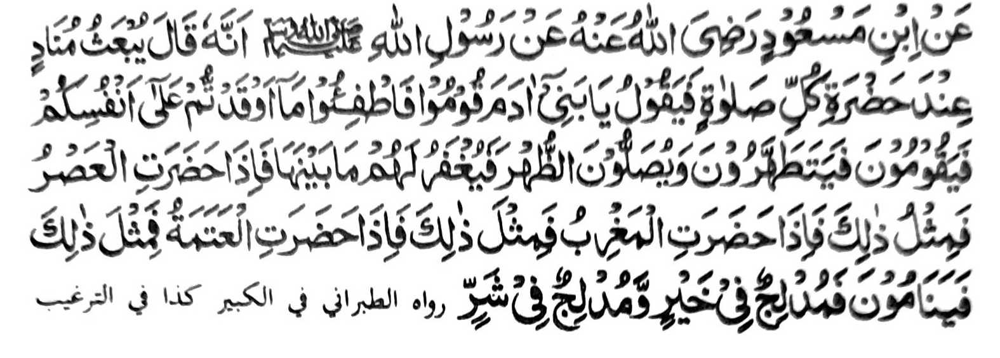

HADITH- VIII

Miyaka thitayan ko Ibn Mas-ud (Radhiallaho Anho) a miyaka-poon ko Rasulollah (Sallallaho Alaihi Wasallam) a mata-an a pitharo iyan, "Magaden so Allah sa pakaphananawagen ko masa a katalingoma omani (wakto) Sambayang a gi-i niyan tharo-on, "Hay, mbawata-ano Adam, tindeg kano na parenga niyo so nganin a miyabiyagio ko manga ginawa niyo sabap ko dosa! Na tomindeg siran na zosoti (magabdas) siran go zambayang siran ko Dhohr na rila-an kiran so nganin a (dosa ko) pageletan o dowa wakto. Amai ka makatalingoma so wakto a Asr na sakamaoto a mapenggola-ola. Anda-i katalingoma o Maghrib na lagid iyan. Na amai ka matalingoma so Isha na sakamaoto. Na makatorog siran go adena a miyamakot nggalebek sa mapiya go aden a miyamakot nggalebek sa marata."
So Salman (Radhiallaho ’Anho) na pitharo iyan; "Oriyan o Isha na so manga tao na miyaba-ad sa telo ka sagorompong, aden a saba-ad a so gagawi-i na kiyapoonan o mapiya ago kalaba. Giyoto so manga tao a pinggasto iran so kagagawi-i sa simba ko Allah, ko masa a totorogen so manga ped a tao. Siran na so gagawi-i na kiyakowa-an niran sa mala a balas phoon ko Kadenan niran. Aden peman a saba-ad a biyaloiyan so gagawi-i a dosa ago morka kiran, sabap sa pinggalebek iran so manga rarata si-i ko tena-tenao a kagagawi-i. Siran na so kagagawi-i na kiyapoonan a boko ago ringasa. Aden a ika telo a sagorompong a komiyabalaga makatoro ko oriyan o Isha, na dasiran makalaba ago da siran nambo malapis."